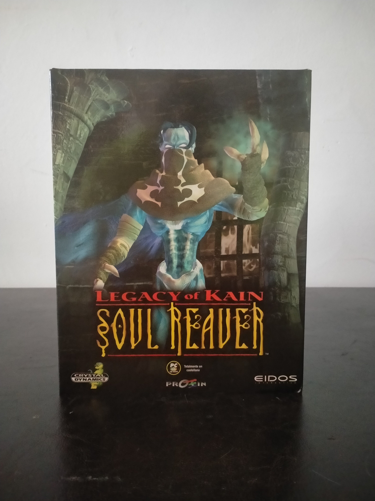

Ficha #000083
Legacy of Kain: Soul Reaver
Legacy of Kain: Soul Reaver es una aventura de acción en tercera persona desarrollada por Crystal Dynamics y publicada por Eidos Interactive en 1999. Segunda entrega de la saga Legacy of Kain, traslada el protagonismo a Raziel, antiguo lugarteniente vampírico de Kain, condenado a una existencia espectral y movido por la venganza en el decadente reino de Nosgoth. El juego destacó por su estructura de exploración conectada, resolución de puzles ambientales, combate cuerpo a cuerpo y una mecánica central basada en alternar entre el plano material y el plano espectral. Su dirección artística gótica, su narrativa oscura y su tecnología de streaming de escenarios con cargas mínimas lo convirtieron en uno de los títulos de acción-aventura más representativos del cambio de generación entre los noventa y los primeros años del 3D moderno. Esta edición española en caja grande para PC CD-ROM fue distribuida por Proein y se presenta completamente localizada al castellano.
- Formato
- Big Box
- Plataforma
- Win95 Win98
- Género
- Acción aventura Aventura en tercera persona Fantasía oscura Puzzle Plataformas 3D
- Serie
- Todos Big Box
- Desarrollador
- Crystal Dynamics
- Distribuidor
- Eidos Interactive, Proein
- EAN
- 5032921005739
Contenido de la edición
- Caja Big Box
- CD-ROM en caja jewel case
- Tarjeta de registro o encuesta de producto
Preservación
- Protección
- No determinado
- Formato recomendado
- BIN/CUE
- Jugable en virtualización
- Sí
Preservación recomendada mediante imagen completa del CD-ROM original en BIN/CUE o ISO, conservando también la documentación física y la caja. La edición indica ejecución directa desde el disco, por lo que conviene verificar en entorno Windows 95/98 virtualizado si requiere presencia del CD durante instalación o ejecución.